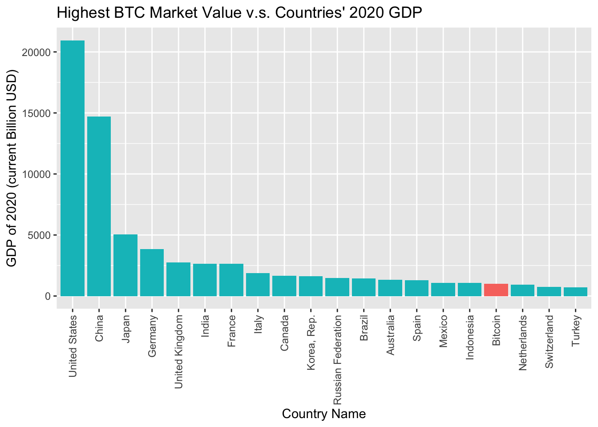

cryptoGraphic
2022-05-04
Chapter 1 Introduction
1.1 What’s cyrpto?
Based on cryptography and network P2P technology, Cryptocurrencies are generated by computer programs, and then issued and circulated on the Internet. Bitcoin is regarded as the world’s first and currently the most dominant digital cryptocurrency.
According to the report from cryptocurrency tracker CoinGecko, the total market capitalization of cryptocurrencies is $2.36 trillion, while the total market capitalization of bitcoin is $900 billion by the end of 2021. There are only 16 countries in the world with a GDP larger than Bitcoin (BTC) market value.

1.2 Why crypto?
Unlike tradition stocks, cryptocurrencies are not backed by any assets or cash flow, the only thing driving their prices is sentiment-driven speculation. As sentiment changes, prices can change dramatically.
Due to the nature of cryptocurrency, it has some advantages over traditional stocks.
Availability - Crypto can be used as long as the user has internet or mobile access. Thanks to this, we can pay for products and services all over the world without having to convert currency to country-specific currency.
No Commissions - When paying with cryptocurrencies, first of all, we avoid banks and intermediaries, so we do not incur commissions and fees for servicing bank accounts. The cryptocurrencies system is based on P2P (Peer-to-Peer), i.e. no intermediaries.
Anonymity - we can pay primarily in cryptos for transactions we wish to be anonymous.
No Inflation - Cryptos are created on the so called defense mechanism against inflation by setting a maximum amount of cryptos and the inability to increase it.
1.3 Why not Crypto?
On the contrary, cryptocurrencies also have many obvious disadvantages.
- Risks - The exchange rate of cryptocurrencies is very volatile.
- No Control - Cryptos are not regulated by financial and state institutions, and there is no central bank.
- Speculative Bubble - Many critics of cryptos argue that their exchange rates are driven by the enthusiasm of internet users and do not determine the crypto’s true value.
- Anonymity - This feature is both an advantage and disadvantage of cryptocurrencies. Criminals can use cryptocurrencies to fund illicit interests.
- Irreversibility of transactions - if we order a transfer to the wrong address, the transaction will not be refunded. There is also no reason for us to demand the return of cryptos.
1.4 Our goal
Based on the characteristics of cryptocurrency, we have raised several basic questions.
- How many cryptocurrencies are there in the market?
- What are their historical prices and valuations?
- Why are cryptocurrencies suddenly so popular?
And after having the basic idea of the cryptocurrencies, we want try to doing some research on the following questions.
Explore the development trend of cryptocurrencies from the market cap and their public attention.
Show how the cryptocurrencies are different from traditional financial derivatives by comparing their behavior when affected by the positive or negative factor under the same time period.
What factors are related to the price of cryptocurrencies? Rather than modeling, we will apply an exploratory data analysis on this question.